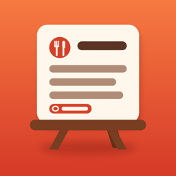

Recipe Stand
Cook Mode, timers and hands-free voice for your recipes. One price, no subscription.
Email us and include the recipe link if it's about importing. We usually reply within two working days.
Contact SupportFrequently asked questions
Tap + on the Recipes tab and choose Paste a link, Screenshot or photo, Scan a page, Paste text or Write it myself. You always get to review the result before saving.
Some sites hide their recipes behind logins or scripts. Take a screenshot of the recipe and import it with Screenshot or photo — the text is read on your iPhone. Then let us know the site so we can improve support for it.
In Cook Mode tap Voice, then say “next”, “back”, “repeat” (reads the step aloud), “timer” (starts the step's timer) or “stop” (pauses the next timer). Commands also work in Turkish, German, French, Spanish, Italian and Dutch — choose the language in Settings. Recognition happens on your device.
No. While Cook Mode is open, the screen stays awake. You can change this in Settings.
Everything, including Cook Mode, for up to 3 of your own recipes. The one-time unlock removes the limit forever and is shared with your family through Family Sharing.
Open Settings → Restore Purchases. Refunds are handled by Apple at reportaproblem.apple.com.
Recipes are stored on your device and included in your regular iPhone/iPad backup. Use Share on any recipe to send it as text.
Türkçe destek
Tarif nasıl eklenir? Tarifler sekmesinde + simgesine dokunun; bağlantı yapıştırın, ekran görüntüsü ya da yemek kitabı sayfası tarayın veya kendiniz yazın.
Sesli komutlar: Tezgâh modunda “Ses”e dokunup “sonraki”, “önceki”, “tekrar”, “sayaç” veya “dur” deyin. Tanıma cihazınızda yapılır.
Satın alma: 3 tarife kadar her şey ücretsiz. Tek seferlik kilit açma sınırı kaldırır, Aile Paylaşımı ile paylaşılır. Geri yükleme: Ayarlar → Satın Alımları Geri Yükle.
Sorularınız için: mrsahinrasit@gmail.com